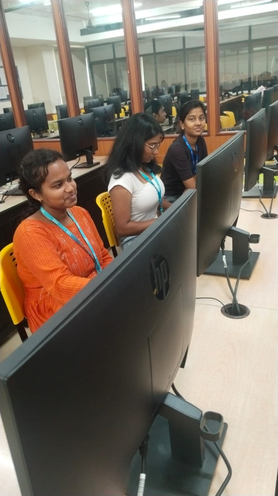
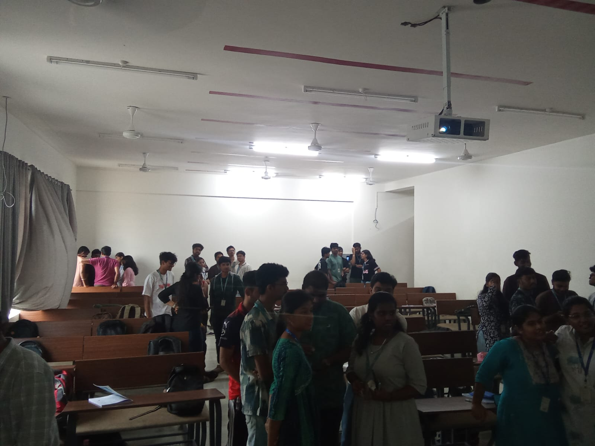
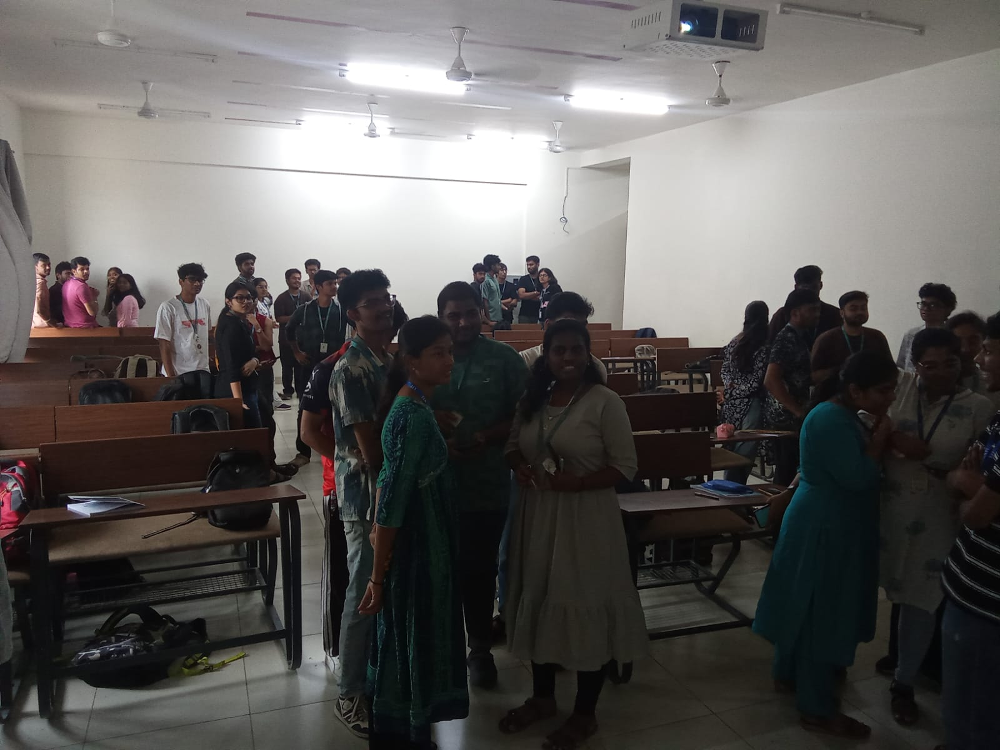
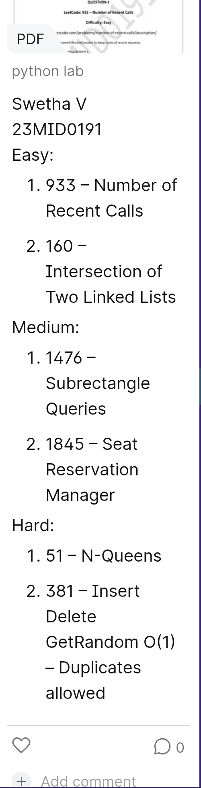

⌘
Understand
Build a foundation by learning concepts, syntax, and the logic behind each program.
A collection of my Python lab work, problem-solving practice, classroom experiences, and the lessons that made this semester meaningful.
# Every line is progress def keep_learning(): skills = ["curiosity", "practice", "patience"] for skill in skills: print(skill) keep_learning()
At the beginning, Python felt like another subject to complete. With every practical session, exercise, and discussion, it became something I wanted to understand better.
Build a foundation by learning concepts, syntax, and the logic behind each program.
Try different approaches in lab sessions, learn from errors, and make the code work.
Practice problem-solving and become more confident with unfamiliar questions.
These are the LeetCode problems recorded as part of my Python lab practice, grouped by difficulty.
Problem names and difficulty groups are reproduced from the supplied Python lab record. Open each title to view its LeetCode description.
My project write-up explores ErrorInsight, a log analytics and system health intelligence platform.
Intelligent Error Analysis and Resolution Recommendation System
The platform is designed to transform application logs into organized insights. It ingests log records, classifies errors, normalizes severity, detects unusual patterns, calculates system health, and presents troubleshooting recommendations.
The score shown in the visual is illustrative, not live project data. Project details are based on the supplied write-up and presentation.
Snapshots from lab sessions, classroom activities, peer discussions, and the shared learning environment.




I value instructions that are easy to follow, well-organized notes, and the opportunity to approach tasks step by step.
Break larger tasks into smaller steps.
Use examples and practical exercises to reinforce concepts.
Allow time to understand, organize, and express ideas.
Swetha V · Dysgraphia
Dysgraphia can affect written expression and the process of putting ideas on paper. I find clear layouts, simple instructions, and step-by-step task organization helpful. This portfolio uses readable sections and concise descriptions to make the content easier to navigate.
Sometimes, we enter a classroom expecting to learn a subject, but we leave with lessons that go far beyond academics. Some people come into our lives without knowing how much of an impact they are going to make. For me, this semester was one such experience.
This semester, I had the opportunity to learn Python under Ms. Sharmila Banu. To be honest, during the first lab session, it felt like just another normal, boring lab. I wasn't particularly interested or excited about attending. But something changed from the second session onwards. I slowly started enjoying the lab sessions and genuinely began looking forward to attending them. Every class gave me something to learn, explore, and improve.
Of course, I learned Python, understood concepts, worked on programs, and gained practical knowledge. But the most memorable part of this experience was not entirely about programming. It was about the person who taught me.
Ma'am might appear rough, strict, and strong from the outside. She has a way of making us take things seriously. But when you look beyond that exterior, you discover a genuinely kind-hearted, humble, and down-to-earth soul. Sometimes, the people who appear the strongest carry the warmest hearts.
What makes her special to me is something she probably doesn't even realise. During a phase of my personal life when I was struggling with certain thoughts and emotions, some of her advice and words gave me a completely different perspective. She gave me advice that I genuinely needed at that particular point in my life. The timing of those words mattered more than she could ever imagine.
What touched me even more was that she didn't have to care about what was happening in my personal life or worry about my mental well-being. As a faculty member, she had no obligation to look beyond academics. Yet, she noticed, showed concern, took the time to speak to me, and offered advice. That meant a lot to me.
She might have said those things casually, without knowing how deeply I needed to hear them. But those words stayed with me. There were moments when I needed someone to remind me to be strong, to look at things differently, and not let certain situations define me. Somehow, her words did exactly that.
I call her an eye-opener because she helped me realise things that I couldn't see clearly at that point in my life. She unknowingly gave me the motivation to become mentally stronger and look at life with a little more courage.
I don't know whether she realises the difference she makes beyond the classroom. Perhaps she sees herself as someone simply doing her job, teaching Python and guiding students through their practical sessions. But sometimes, teachers become a source of strength in ways they never intended.
As this semester comes to an end, I know I might forget a few programs, struggle to recall some syntax, or move on to another subject. But I will always remember the person who made me enjoy something I once avoided and gave me lessons that were never part of the syllabus.
Thank you, Ma'am, for being more than just a Python faculty member. Thank you for your guidance, your advice, your kindness, and for unknowingly helping me become a stronger version of myself.
You may never know how much your words meant to me, but some lessons are too valuable to forget.
Some teachers teach us a programming language. Some unknowingly help us rewrite the way we look at life.
This portfolio is a snapshot of one semester. The learning continues from here.